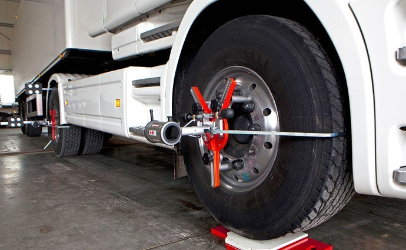
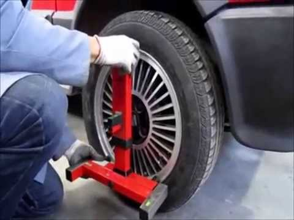
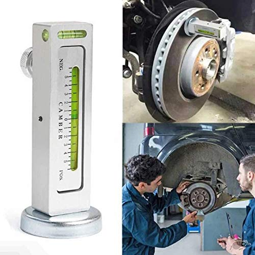
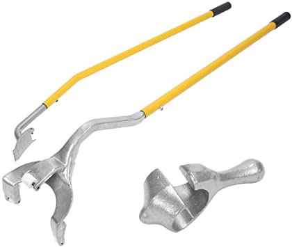
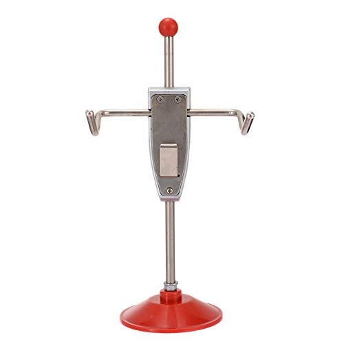
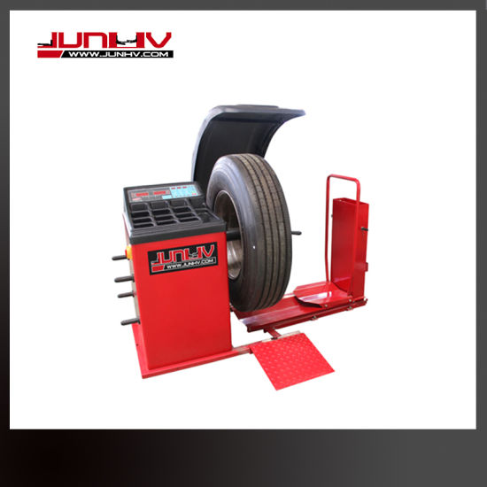
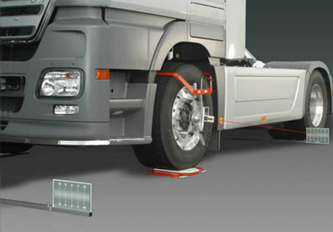

LOS MEJORES MODELOS PARA RENTAR TIENEN UNA BUENA ALINEACION
ALINEACION
un ajuste en el sistema de suspensión de tu camión, el cual se encarga de conectar tu vehículo con las ruedas. Este proceso corrige los ángulos de los neumáticos para que entren en contacto con la carretera de la forma correcta. Un camión con las ruedas mal alineadas supone un coste y un peligro en la carretera. Si se trata de una flota de camiones, los números se multiplican disparando la inversión y las probabilidades de sufrir un accidente. Utilizamos una de las mejores alineadoras del mercado, la Haweka AXIS4000. Con ella podemos realizar un diagnóstico rápido y preciso gracias a su montaje rápido en las llantas mediante soportes magnéticos y a la transmisión inalámbrica de datos directamente a nuestros equipos.

HERRAMIENTAS
    